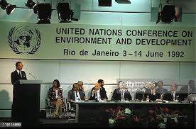

Home
History
Initiate
Our mission is to create a platform that fosters collaboration, inspires innovation, and empowers individuals and organizations to take meaningful steps toward a more sustainable future.
The History of Climate Action
History

Close